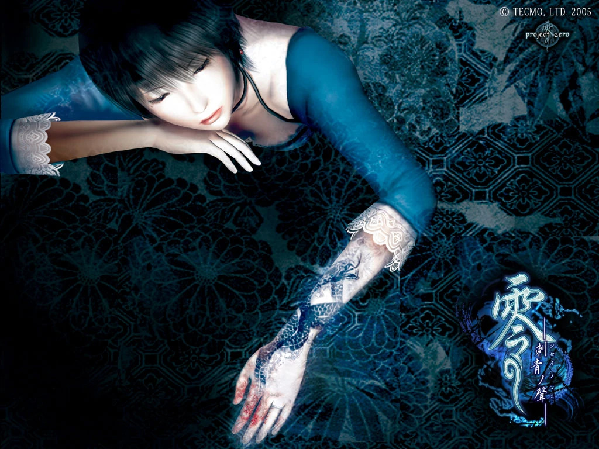
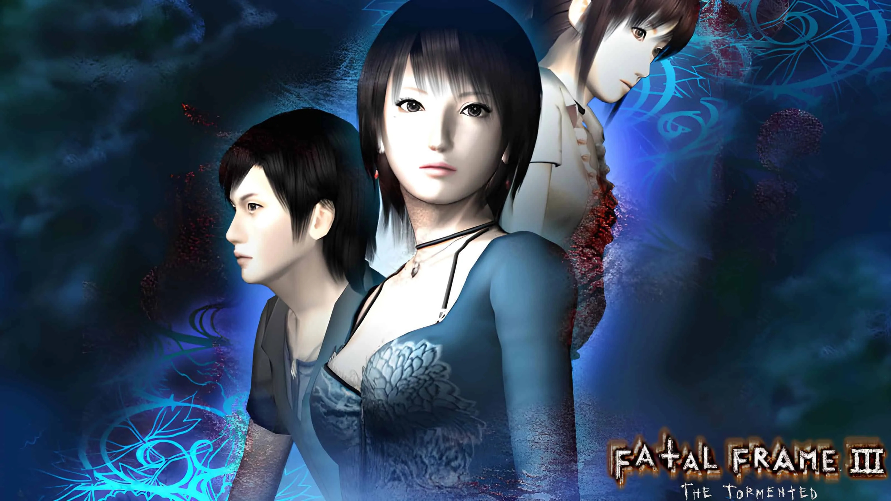

Sinopse
O jogo tem três personagens jogáveis, cada um com seu contexto na narrativa do jogo. No entanto, o foco fica em Rei Kurosawa que após perder seu noivo em um acidente de carro. Está morando sozinha com Miku que está trabalhando como assistente de fotografia. O enredo começa quando elas fazem visita a uma casa abandonada e Rei vê o vulto de seu falecido noivo em uma foto que ela tira na casa. Após isso ela começa a sonhar com uma mansão estranha, onde ela constantemente via coisas estranhas e tentava procurar pelo noivo.
Personagens Jogáveis

- Rei Kurosawa:
- É a principal de Fatal Frame III The Tormented, uma fotógrafa freelancer de 23 anos que lida com uma forte depressão e culpa após causar um acidente de carro que matou seu noivo, Yuu Asou. Começa a ter sonhos com a manor of sleep e começou uma corrida contra a maldição se espalhando por seu corpo, enquanto enfrenta os seus traumas.
- Miku Hinasaki:
- É a protagonista do primeiro jogo da série, e faz seu retorno para o terceiro jogo, ela mora com a protagonista Rei, e é sua assistente. Ela chegou até essa casa após retornar da Himuro's Mansion, pois seu irmão Mafuyu confiou a segurança dela a seu melhor amigo Yuu Asou, que é o noivo de Rei.
- Kei Amakura:
- É o terceiro personagem jogável, a relação dele com a série é de que ele é o tio de Mio Amakura, unma das protagonistas do segundo jogo. Ele acaba na mansão após começar a investigação para ajudar sua sobrinha que estava tendo os mesmos sonhos sobre a Manor of Sleep.
Conexões com os anteriores
O terceiro jogo tem a presença de um pouco de cada um dos jogos anteriores, com a Miku reaparencendo como personagem e a Mio sendo citada algumas vezes durante o jogo. Durante a jogatina você vai descobrindo o que aconteceu após o fim de cada jogo e como os personagens lidaram com esses acontecimentos, e tudo isso acaba convergindo com os sonhos na Manor of Sleep, onde todos os personagens estão enfrentando seus traumas relacionados aos Rituais dos jogos.